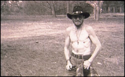
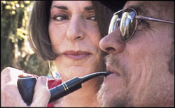
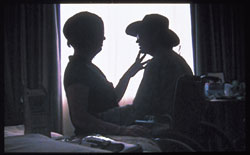

|
「子宮を摘出して、もう女じゃなくなった気がするんです」
この世の終わりのような、ため息混じりの沈うつな様子。自尊心が地を這うような声で語られる、婦人科がん仲間の術後の悩みに耳を傾けているうち、私の中のパンドラの匣（はこ）がパカンと勢いよく開く。
あぁ、また、出会った。懐かしいような、くすぐったいような。どうも、どこに居ても、私にはこのテーマが付いてまわるらしい。
自分を女性と思うか、男性と思うか──「性の自己意識」（ジェンダー・アイデンティティ）、あるいは俗に言う「心の性」は、人格の核となる重大なこと、と言われている。でも、それが、生まれながらのからだの性と一致している、例えば、おちんちんがあって自分を男だと思っている場合、普段は、あまり人の意識にのぼることはない。空気のように当たり前になっている。
人の性別は、からだの性、特に産まれ落ちた時の赤ちゃんの外性器のかたちによって、判別されている。女の子か、男の子か。たいがい、その性別が、その人に一生引き継がれる。ペニスが極端に小さいとか、睾丸もペニスも腟もあるなど、外性器の形から二者択一が難しい場合を除いて、性別の判定のために性染色体や性腺、内性器の状態などをくわしく調べられることはまずない。
* * * * *
1999年、仁科明子（現/亜季子）が、俳優の松方弘樹との離婚を決意した背景にも、子宮頸がん術後に松方が放った、「お前は女じゃなくなった」という言葉の暴力があったと報じられた。
松方の前妻も、子宮頸がん体験者。だから、仁科の子宮摘出を招いたそもそもの原因は、松方から感染したヒトパピローマ・ウイルス（※1）である可能性が高い。伝えられた松方の言動は、ただでさえ、からだにメスを入れられ、心身に大きなダメージを受けた妻に、しかももとは自分にあるのにと、盛んにワイドショーや女性週刊誌などでやり玉に上がっていた。
でも、これは過去の出来事と片付けられない。今も、子宮を女性の象徴のように思っている人は、男性にも女性にもいる。
子宮筋腫や子宮頸がん、子宮体がん、卵巣膿腫、卵巣がん、子宮外妊娠などで、子宮や卵巣の摘出手術を受けて、女性性の喪失感を味わう人たちは少なくない。喪失感をどのぐらい強烈に感じ、悶々と悩むのか。閉経前か後か、治療を受けたときの年齢にも左右されるが、子どもができなくなる悩みとクロスしているのか。どんな時につらいのか--夫と喧嘩してしまったとき、姑からの電話を受けたとき、元同級生と再会したとき、テレビで幸せそうなカップルや家族を見たとき…。ひとりひとり違う。
「子宮を失ったら、私はもう女でなくなっちゃう」と本人が強く信じて、生活の質が著しく低下しても、命を危険にさらしても、摘出手術を拒む場合もある（その中には、子どもが産めなくなることへの抵抗や心の性が揺らぐことの恐れより、医師の説明不足のため、術後、性生活が損なわれるのではと心配している人たちもいる）。「もう、お前は女じゃなくなったから抱く気がしない」などと、先の俳優カップルのようなパートナーの言動で、喪失感に直面する場合もある。「女じゃなくなった気がする」という状態も多様で、複雑な要素がからみあっていることがある。
中には、内性器が無くなったことに、喪失感を味わわない人もいる。おしっこが出にくくなった、脚がむくむなど、治療の後遺症や再発不安と格闘していて、とてもそれどころではなかったとか。逆に「煩わしかった月経とおさらばできたし、妊娠のプレッシャーからも解放されて、せいせいした」という人もいる。
それに、あたりを見まわすと、自分を女性でないような「不全感」に見舞われるのは、婦人科がんや子宮筋腫などの患者の専売特許ではない。子どもがなかなかできないことに悩んでいたり、閉経したり、若さが去った女性たちの中にも、その感情が湧き起こったり、心を占めることがある。
「子宮（妊娠能力、月経）＝女性」なのだろうか？ 子宮の喪失は、女性性の喪失なのだろうか？ その人の魅力が低下したりするのだろうか？
* * * * *
医療ジャーナリストの油井香代子さんの記事「『子宮の病気』になってしまったら」（※2）を読んで、深いため息をついてしまった。
「子宮をとってしまったからといって、それで『女でなくなる』わけでは決してありません。生理はなくなりますが、卵巣が残っていれば女性ホルモンはきちんと分泌しますから、女性であることに何ら変わりはありません。また、たとえ卵巣をとったとしても、ホルモン補充療法をして、女性ホルモンを補充すれば問題はありません。もちろん、性生活にもほとんど影響はありません。/ですから、不幸にして子宮をとることになったとしても、心理的な負い目を感じることなく、前向きな生活を送ってほしいと思います」
筆者は子宮や卵巣を摘出した女性への、なぐさめと励ましを込めて、このように書いたのだろう。
でも、「子宮＝女性」ではなく、「女性ホルモン＝女性」、あるいは性生活に触れていることから「（腟）性交可能＝女性」と置き換えているに過ぎない。「からだの性＝性別」という点では、根っこは同じ。
これでは、救いにならない女性たちが、大勢いる。「女性ホルモン＝女性」のモノサシから検証してみよう。
子宮体がんは、女性ホルモンの一種、エストロゲン（卵胞ホルモン）によって増殖が促される「ホルモン依存性」のがんと考えられている。そのため、術後のホルモン補充療法に消極的な医師が多い。
ちなみに、同じように「ホルモン依存性」の患者が約6〜7割を占める乳がんの治療でも、がんの増殖を防ぐため、抗エストロゲン剤によってエストロゲンの分泌を抑え、閉経を引き起こさせることがある。
卵巣を摘出した良性疾患や子宮頸がん、卵巣がんの人で、医師にホルモン補充療法を勧められても、乳がんのリスクが高まることを恐れて断る人たちもいる。血栓症や肝機能障害など、合併症があって、できない場合もある。
閉経して、ホルモン補充療法をしない女性たちも多い。
「（腟）性交可能＝女性」というモノサシでいえば、卵巣の摘出によって、性欲が減退したり、腟が萎縮する人や、放射線療法の後遺症で腟が萎縮して、性生活に影響を受ける人たちもいる（※3）。
油井さんの記事のような「からだの性＝性別」というモノサシでは、女性ホルモンが乏しくなったり、性生活に影響を受けた女性に、そのなぐさめや励ましは、届かない。むしろ、逆に「私はもう女ではないって言いたいの？」「心理的な負い目を感じても、仕方がないってこと？」と落ち込ませてしまうかもしれない。
もっと別の、性のとらえ方が必要なのだと思う。
* * * * *
「男か女なんて、くっついている性器とは、無関係さ。なにより、優先すべきなのは、心と頭だ」
彼の名前そのままを冠したドキュメンタリー映画「ロバート・イーズ」の中で、主人公のロバートは、とつとつと語っている。彼ほど、このセリフを口にするのに、ふさわしい人物はいないだろう。

子宮・卵巣がんを病み、終末期を、アメリカのジョージア州の片田舎にある自分の農園で、時々訪れる恋人や仲間、息子、孫などに支えられ、穏やかに過ごしている。かけがえのない、残されたわずかな時間の一瞬一瞬を、愛おしむかのように。
どこから見ても、生っ粋の南部男、男の中の男だ。低い声音。あごひげと口ひげをたくわえ、筋肉質の引き締まったからだ。太く筋張った指には、大ぶりの銀の指輪がはめられている。ダンディにパイプをくゆらせ、カウボーイハットに黒の皮ジャン、デニムのシャツとジーンズで、ビシッと決めている。きっと、近寄ったら、男の体臭が漂ってくるに違いない。
子宮や卵巣のがん？ 男なのに、いったい、なぜ？
ロバートは1945年12月18日ウエストヴァージニア州の小さな町で、女性として生まれ、バーバラと名付けられた。幼い頃から、からだと心の性に不一致感を味わい続けてきた。彼の子ども時代のスナップ写真は、無骨で野性的なロバートとは、まったく別人のようだ。母親にワンピースやリボンで女の子としてかわいく飾り立てられ、繊細で知的な美少女に見える。だが、意に反する服装に、どこか物悲しげな表情をたたえている。
そう、ロバートは女性から男性へのトランスセクシュアル（性同一性障害）。こんなにも外見が変容したのは、「自分を偽るのはやめたい」と男性ホルモン、テストステロンの投与を受けたからだ。
テストステロンは、女性から男性へのトランスセクシュアルにとっては、魔法の薬のようなもの。胎児のころに始まる「性の分化」は、最初は女性も男性も同じ女性形。男性の場合、性腺が遺伝子のはたらきで精巣化し、そこから男性ホルモンのシャワーを浴び、ホルモンの受容体が反応することで、男性化していく。
大人になってから“女体”に男性ホルモンを投与しても、性の分化をなぞることになるので、骨格や筋肉は発達し、体毛やひげが濃くなる。喉仏も大きくなり、声も低くなる。ホルモン剤の影響には個人差があるが、そもそも、生まれながらの男性にも、ひげの薄い人もいれば、背の低い人もいるではないか（※4）。
女性と男性は、差異をことさら大きく考えられがちだが、性分化までさかのぼると、原形は同じで連続性があるということは、とても意味深い。
ロバートが手術したのは上半身だけ。乳房のふくらみを切除し、卵巣や子宮の摘出術やペニスの形成術は受けなかった。それでも、下半身の形は、パンツの中だけで済ませようと思えば、済ませられる。
他人は、その人の性別を、声や話し方、身体つきや服装、しぐさなどで、知らず知らずに見分け（ようとし）ている。パンツの中身がどうかなど、ふだんは、気にかけちゃいない。
だから、男性としての社会生活は、男性ホルモンの投与と胸板を平らにし、服装や話し方、歩き方などに気を配ることで、パス（通用）することが可能になってくる。
ロバートが下半身の手術を受けなかった理由は、映画では語られていない。
どのようなからだであれば魂の平安を得られるかという、本人の内面の違和感の強さ以外にも、性別適合（性転換）手術となると、医療や法的な状況、本人が手術に耐えられる健康状態か、経済力、家族関係などがからむ。どこを落ち着きどころ、終着点にするかは、一筋縄ではいかないのだ。
「最後まで残っていた女が命取りになるとは…」と、ロバートは万感を込めて言う。
* * * * *
彼は女性として二回、男性として一回結婚し、二度目の結婚で二人の男児を出産している。
「妊娠した自分の胎内で、新しい生命を育んでゆく喜び。その一方で、自分の身体に裏切られたと感じた。後悔はしていない。だが、息子達の父親と結婚した時は、同性愛者になった気がした。（中略）男なのに妊娠するなんて。まったく…。人生最良と最悪の時を同時に迎えたようなものさ」（ロバート）
ある日、彼は同じように性の不一致感に悩む仲間と運命的に出会い、本来の性を取り戻す方向へ歩を進めていく。
どれほどの困難に見舞われたことだろう。とりわけ、保守的な南部、性的マイノリティへの差別や偏見が根強く、憎悪による殺人さえも横行する土地柄で。
だが、その恐怖や不利益を押しても、自分を偽り続ける苦しさが、勝ったのだ。その深い孤独感を癒し、性別の移行期の困難をサポートしあったのが、ロバートが「僕の大切なもう一つの家族」と呼ぶトランスセクシュアルの仲間たちの絆である。

トランスジェンダー（※5）の大会で知りあったローラ・コーラとは、互いに「未来なきロマンス」に深入りするのをためらったが、次第に深く愛しあうようになる。彼女自身も、男性から女性へのトランスジェンダー。ロバートはナイトを気取り、「誰からも愛されず、見下されるのでは」と自信なげだったローラへ「憧れの女王様」「世界一の美女」と惜しみない賞賛を贈り、励まし続ける。
お互いの存在をかけがえのないものとして尊重しあい、いたわりあう姿は、立場を超えて、パートナーシップのお手本のようだ。
ローラの手指がロバートの背中を艶かしく愛撫するふたりの抱擁シーンや、溶けて一つになるようなダンス・シーンが脳裏に焼き付く。「オルガスムスを得るためだけじゃない。相手を丸ごと受けとめる行為なの」とローラ。「挿入そのものは重要じゃない。精神的な充足感が得られるかどうかが、問題だ」と応えるロバート。
季節がめぐり、独立独歩だった彼の衰弱が進み、痩せ細り、モルヒネで意識朦朧となる。「楽園の定義は人それぞれ」「私の願いは、彼が彼なりの流儀で、幸福な時間を過ごすこと」と信じるローラは仕事を休んで傍らに付き添い、献身的に身の回りの世話をするようになる。
ローラ以外にも、人望のあるロバートの周囲には、多くの仲間が集う。彼を慕ってやまない、同じく女性から男性へのトランスセクシュアルで、息子のようでもあり、若きライバルでもあるマックスと、新しい恋人コリ。同じく、トランスセクシュアルのキャスと、その姉さん女房などがいる。
この映画では、マックスとローラだけでなく、世代や価値観、経歴なども違う、何組かの当事者カップルの描写を交差させることで、「トランスセクシュアルとはこんな人たち」という鋳型を再生産するのではなく、けっして一括りにはできない、個性豊かな実像に肉迫している。
ところで、「なにより、優先すべきなのは、心と頭だ」という思いを共有しあう“選択縁”のトランスジェンダー仲間に比べ、血縁関係は本人たちが意思的に選べないだけに、分が悪い。
年老いて厳格なロバートの両親にとって、ロバートのことは、理解と許容範囲を上回っていた。両親とも、取材に対して、身元や顔は明かさない。
母親は、彼にトランスセクシュアルだと打ち明けられると、「私のせいだわ」と自分を責めて泣いた。彼が35歳で手術を受けたのを境に「同性愛の方がまだマシじゃないの？」と、5年間口をきかなかった。父親は、自慢の娘だったバーバラを「末は大統領か王様かって男に嫁がせる」という夢（まったく親の身勝手な期待だったが…）が打ち砕かれてしまったと嘆く。ロバートが実家に帰れば、周囲の人々には甥と紹介し、娘のバーバラのことをたずねられたら「仲違いして疎遠になった」と答えるという。
両親にとっては、自分たちのかわいい愛娘は、生前から、すでに死んだも同然だったのかもしれない。「本人が選んだ道だ。立派だとは思うよ」とは言うが。
一方、成長した息子は、息子なりにロバートを受け入れている。
「母親は母親でしかない。友人は周囲には、こう話せと言うんだ。『母親は死んだ。あれは継父だ』とね。どだい無理な話さ。自分に正直であれと、ママに教わった」
自分に正直であれと。ロバートのひたむきな生き方が、その正直さゆえに傷つけもしたであろう、実の息子へも受け継がれていく。息子は、ママのことを語るのに、「彼女」という代名詞を使ったことにハッとして、「彼」と言い直す優しさも持っている。もし、私の母が父に、あるいは父が母になったら… （※6）、そう想像すると、ロバートの息子が、母親の心の性を尊重して「彼」という代名詞を口にするようになるまで、どんな混乱や葛藤を経てきたのだろうかと胸を打つ。
最も無邪気なのが、3歳の孫息子だ。男として生きるようになってからの祖父しか知らず、実にくったくなく、ありのままにロバートと接している。「彼（孫息子）にとっての俺は、このまんまの俺でしかない。今までも、これからも、ずっとパパのまんま。単純なことさ。つまり、俺は俺だ」とロバートは相好を崩す。
ロバートは、心の性で生きることで、愛する家族を悩ませ、苦しませてしまった。そのことを一番よくわかっているのは、敬けんなクリスチャンで、生真面目で堅物と言ってもいい、家族想いのロバート自身なのだ。
人それぞれの理解と、それぞれの受けとめ方がある。ひとりの人生が、周囲に投げかける波紋の大きさ。
* * * * *

やっと手にした、つかの間の農場での平穏な日々。だが、次第に体調を崩し、ある朝、ベットの上で目覚めたら、周囲は血の海だった！
友人たちの証言によると、出血多量で死にかけ、20人以上の医者にかけあったのに、患者がトランスセクシャルだと明かすと、引き受けてくれる婦人科医は皆無だったという。
「ある医者が本音を打ち明けてくれた。見た目がこれじゃ、他の患者が嫌がるんだと。評判を気にしている」（ロバート）
だが、彼はこうも言っている。「連中のせいで死ぬとも言えるが、憎みはしない。ただ、あわれみを感じる」と。
医療界の性的マイノリティ、トランスセクシュアルへの偏見や、対応の深刻な不備が、事実として淡々と突き付けられる。悪質な診療拒否。粗暴な手抜き手術──乳がんの女性の手術後とは大違いの、醜い傷跡が残る乳房切除術や、偽物と一見してわかる陰茎形成術。患者の足元を見る、割高な手術費用。厄介払いでもするように、車椅子で追い出され、ないも同然の術後ケア…。
1960年代に、トランスセクシュアルに対する治療モデルが確立したと言われるアメリカでも、そのような実態があるのかと、暗たんたる気持ちになる。
日本では、性別適合手術を行った産婦人科医に対し、1969年に旧優生保護法（母体保護法）違反による有罪判決が下されて以来、1996年になるまで約30年、トランスセクシュアルへの医療行為は水面下に封印されてきた歴史がある。
ようやく整備が始まってきた一方で、医療事故も表に出てきた。2002年2月には、美容形成外科のクリニックで、性別適合手術を受けた男性から女性へのトランスセクシュアルが、麻酔事故によって急死している。医療の量も質も絶対的に不足している日本の現状を垣間知る者としては、アメリカの事情は、決して、対岸の火事ではなく、身につまされることばかり。
婦人科医療を必要とする人は、女性だけではないのだ。
この映画から伝わってくるものは、実に濃密だ。
人間にとって生きる支えとは、家族とは、という普遍的なテーマもある。皮肉で残酷な、絶望の上に絶望してもおかしくない状況にあって、ロバートは、どんなときにもユーモアを忘れないこと、誇り高く生き抜くこと、愛すること、希望を持ち続けることをメッセージする。
性とは何かを考えるヒントが、ジクソーパズルのように、散りばめられている。末期がん患者にとってのターミナルケアや死の準備、セルフヘルプ活動の社会的な意義なども浮き彫りにされている。
そして、もう一つの重要な要素は、この作品の製作を通じて強力な理解者となった、女性監督ケイト・デイビスの存在だろう。ロバートをはじめその仲間たちの人柄や生き方への共感、惚れ込みようが、画面からひたひたと観る者の心に伝播してくる。
性的マイノリティを対象とする犯罪が横行する国柄で、暴力にさらされる危険を侵して取材に同意した上、ホルモン注射を打ったり、はだかで着替えたりの舞台裏から、果ては死の瞬間まで公にしたロバートとその仲間たちの決断もすごい。そして、そこまで彼らの信頼を勝ち得たケイト。この映画は、異なる立場の人間の、新たな友情の結晶でもある。
ケイトは取材中、感動のあまり、カメラを覗きながら涙で目が曇ってしまうこともあったという。
ロバートは1999年1月17日、ホスピスのベットの上で、ローラの温かい腕に抱かれながら、静かに息を引き取った。死後、ローラはつぶやく。「張りつめた息苦しい社会。自然は多様性を愛でる。人間には無理？」
性別は、「からだの性」と「心の性」だけではない。社会的・文化的に期待される「性役割」、恋愛や性欲の対象がどの性に向けられているのかを示す「性的指向性」、「戸籍の性」など、多層性がある。
さらに「からだの性」も、細かくみていくと、性染色体や性腺、内性器、外性器など、いくつもの要素がある。何の疑いも持たず、すくすくと女性として育ち、不妊に悩んで検査を受けてみたら、性染色体が「XX」でなかったり、先天的に子宮が無いことがわかることもある。
「心の性」や「性役割」は、物心ついた時から確固として揺るがない人もいれば、時の経過とともに変わる人もいる。
「女性でも男性でもない」「女性でも男性でもある」「女性、男性以外の性別」という性の自己意識を持つ人もいる（※7）
ぺちゃパイでボーイッシュな体型の女性にも、中には「私は女じゃないの？」と苦しんでいる人がいるだろう。男性の中にも、勃起不全で悩んでいたり、事故や病気で性器やその機能を失って、男性性の喪失感や不全感に悩まされている人たちがいる。背が低かったり、からだつきが華奢なせいで、「自分は男？」と悩む思春期の男の子だって、いるに違いない。
あらゆる層をひっくるめて、100%女性、100%男性の人など、むしろマイノリティ。「本物の女性」「本物の男性」こそ、フィクションなのだ（※8）。
* * * * *
婦人科がんを経験する以前の数年間、私は、生まれながらのからだは男性、つまり子宮や卵巣はないけど「自分のことを女性としか思えないんです」という人や、逆に、生まれながらのからだは女性で、子宮や卵巣はあるけれど「男性としか思えない」という人たちと、どっぷり共に生きていた。
欧米に遅れること数十年。1996年7月、埼玉医科大学倫理委員会がトランスセクシュアルのための性別適合手術を正当な医療行為と認める答申を出したのをきっかけに、トランスジェンダーのためのサポートグループを何人かの協力者とともに発足し、運営してきた。
なぜなら、勇気をふるって打ち明けるけれど、私自身、ロバートほど強くはないが、性別違和感に悩んできた。自分のことを女性だと思えないが、男性だとも思えない。大学に入学して制服や標準服がなくなり、自由に服が選べるようになった矢先、一般教養の歴史学講座でひとりの女性教師が発した「今日着る服があなた自身」という言葉に衝撃を受けて、スカートはすべて女装が好きな男友達にプレゼントした。それ以来、ジーンズかパンツルックで通してきた。
大学生時代から、イヤでイヤでたまらなかった典型的な女性名をできるだけ使わず、中性的な通称名を名乗るようになった。社会人になってしばらくして、弁護士に依頼して、家庭裁判所に永年使用を理由に戸籍上の名の変更を申し立てた。改名が認められた瞬間に味わった、「これでそうありたい自分に一歩近付けた！」という喜びと、開放感は忘れられない。よかれと思って名付けてくれた両親には、誠に申し訳ないが…。
赤ちゃんのときの外性器の形では、その子が物心ついたときに、性の自己意識が女になるか男になるかは予測が付かないのだから、できるだけ女でも男でも通用する名前を、これからの親たちは付けてほしいと真剣に思った。
しかし、からだにメスを入れるなんて恐ろしくて、性別適合手術は受けたくないし、私ぐらいの違和感であれば、その必要もないと思っていた。
性器出血が止まらなくなって、いざ、婦人科を受診するとき、最初にやったことは、女性ものの下着を買いにいくことだった。それまで、木綿のトランクスを愛用していたから。くり返される出血は、「また痔になっちゃった」と茶化していた。それでも、出産経験もあり、子宮筋腫を持ち、婦人科検診を欠かさなかった女性から男性へのトランスセクシュアルの親友（外見は男性にしか見えない）の影響もあって、婦人科にはそれなりに足を運んでいたと思う。
がんと診断され、担当医に術式の説明を受けた時、「卵巣を半分、あるいは4分の1残せないか、検討してみる」と言われて、せっかく開腹手術をするのに卵巣を残すのは絶対に勘弁してほしいと思った。卵巣欠落症状が出たら、それはそれで苦しいかもしれないけれど。残すことの拒否感の方が強烈だった。卵巣を両方とも確実に摘出してもらうために、性別違和症候群（※9）の診断書をもらおうと、がんの手術を控えた入院中に外泊許可をもらって、それまで取りわけ敷居の高かった精神科を受診している。結局、婦人科がんの主治医から、病理検査結果を検討した末、浸潤している可能性があるため、卵巣を一部でも残すことは難しいという判断が下りて、その診断書は無用になったのだが。
心とからだの性が一致している女性だったら、再発不安のために卵巣の摘出を望むことはあっても、できることなら内性器を一掃したいという思いに突き動かされることはそれほどはないだろう（※10）。自分のなかに、そういう強烈な衝動が沸き上がったことに、我ながら驚いている。人間の性って、不思議なものだ。
それにも関わらず、摘出手術を受けてから、子どもが産めないからだになったこと、それにまつわる状況はつらかった。
もし、サポートグループ活動を通して、強い不一致感のあるトランスセクシュアルの中にさえ、自分の血のつながった子どもが欲しいと真剣に思う人たちが少なからずいる実例を知らなかったら、自分のこの感情を受け入れることは、もっとずっと難しかっただろう。
ただ、もし「手術できて、良かったね」と言われたら、うーん、それは違うと思う。がん患者ならではの、命に関わる病気になったショックや再発不安、それに卵巣欠落症状や腸閉塞、リンパ浮腫など、次々に見舞われる後遺症のつらさが、しっかりおまけに付いてきたし。良くも悪くもなし。あるいは、良かったことも、悪かったこともある。
まだ、この物語は終わらない。
ある日の術後検診で、担当医が私のCTを前に、何か子宮体がんの病状の説明の拍子に「この画像を見ても、子宮も卵巣もないんだから男にしか見えないよ」と口にした。私はその言葉を聞いて、なんだか、すっきりした気分になった。うまく言えないけれど。
トランスジェンダーの当事者の間では、街頭で無料配布している広告付きティッシュペーパー （広告によって女性用、男性用があることが多い）を、心の性と一致する内容のものが手渡されると「ティッシュペーパー・パス」と言ったり、血液検査の結果、性ホルモンの値が心の性の方の正常値内に入ると「血液パス」と言ったりして、喜んでいる。半分遊び気分で面白がっている人もいれば、真剣にそのひとつひとつを自分が社会的に通用するか否かの踏み絵にしている人もいる。
私はこの日、「腹部CTパスしちゃった」と、まだ性別適合手術前のトランスセクシュアルの友人たちに、えへん、ちょっといばって吹聴した。みんな、なんだかうらやましそうだった。
一方、婦人科がんの仲間に、こんなことを担当医から言われたと話したら、「ひぇ、ひどい！ 私だったら、『男にしか見えない』なんてセリフ、耐えられない！ 手術後の腹部CTって、私にはまだとても正視できないもの」という反応が返ってきて、そういうものなのかと考え込まされてしまった。たまたま私には、勇気づけになったのだが。
医療者の人たちにとっては、幅広い多様性を抱える患者の心に配慮して対応していくことは、さぞ、大変なことだろうと思う。
私はその後、医師のCTへの発言を耳にした時期から、社会的な女性の役割に対する抵抗感がぐっとやわらいできた。内性器がなくなり、女性ホルモンの分泌も低下して、からだの性に対する違和感が解消されてきたのだろう。「女装」も楽しめるようになり、ごくたまには、化粧することもある。これはシミやシワが増えて来た老化対策の意味もあるのだが。ただ、今でも「彼女」という代名詞で呼ばれると、内心、強い抵抗感が込み上げてくるし、時には勇気を出して、イヤであることを伝えることもある。
自分の経験からも、性を男女二つに限定する性別二元制は虚構だと思うし、ひとのあり方は制度や定義よりはるかに大きいと思う。そして、性が多層にあるなかで、人が幸せに生きていくためには、ロバートが遺した言葉「なにより、優先すべきなのは、心と頭だ」と私も言いたい。
子宮や卵巣があろうとなかろうと、立場を超えて、あなたが自分自身をそうだと思う性があなたの性だと。自信を持って！
本文中の写真はすべて(c) Kate Davis
※1…ヒトパピローマ・ウイルス（HPV）は子宮頸がんの主因と言われ、多くはセックスによって感染するが、母子感染などの報告もある。
HPVは性経験のある女性の約10%が保有するという報告もあり、ありふれたウイルスである。感染した人すべてが、子宮頸がんを発症するわけではなく、感染者のうち進行するのは5.5%に過ぎないという研究結果がある。発症には、HPVの悪性度、免疫能の低下、くり返し感染する、クラミジアや性器ヘルペスなどほかの性感染症にもかかっている、遺伝的な素因、たばこを吸う習慣、食生活などのファクターも関与しているらしいが、詳しいことはまだはっきりとはわかっていない。
※2…「清流」2001年1月号（清流出版）
※3…性欲が減退しない人や、腟が萎縮しない人もいる。治療による後遺症は、個人差が大きい。念のため。
※4…男性から女性へのトランスセクシュアルの場合、女性ホルモンを投与しても、性分化と逆行するので、そのような劇的な変化は起きにくい。筋肉は衰え、脂肪の分布は変わり、乳房は膨らむことがある。精巣が萎縮し、性欲が減退することもある。だが、いったん発達してしまった骨格や喉仏、体毛、ひげ、声変わりで低くなった声などは、女性ホルモンで元に戻すことはできない。気になる人は、体毛やひげは脱毛し、喉仏や顔の骨格などが目立つ場合は外科的に削り、声はボイストレーニングなどで対応する。
※5…広義では、生まれた時のからだの性別とは異なる性で生きようとする人の総称。当事者がつくり出した用語で、医療の枠組みにおさまらない多様なあり方を包括している。からだと心の不一致感が強く手術まで望むトランスセクシュアルや、手術までは望まない性別違和感を持つ人（狭義のトランスジェンダー）、異性装の人々も含まれる。
ただ、最近では、「手術を(必要と)しないトランスセクシュアル」という概念も出てきて、言葉の定義は、いやはやむずかしい。
※6…余談だが、父は2002年2月に前立腺がんの手術を受け、それ以前にはがん治療のため、短期間だが、女性ホルモンの投与を受けていた。体重の増加や性器の萎縮などの副作用があり、冗談で私に「パパがママになっちゃうよ」と話していた。ちなみに父の心の性は男性なので、この女性化に抵抗感を覚えていた。
※7…「あなたの性はなに色？」野宮亜紀著、『ジェンダー・センシティブからジェンダー・フリーへ』ジェンダーに敏感な学習を考える会、2000年
※8…これについては、池上千寿子が1995年に行った調査結果が興味深い。都内K大学の学生1〜4年生82人を対象とした。
「あなたの性器の性別は何ですか？」という質問に対し、回答は「女性」49人、「男性」33人。「あなたはどの性に見られたいですか」には「女性」43人、「男性」25人、「どちらでもいい」14人。「あなたは異性らしい服装をしますか」には、「いつもする」5人、「ときどきする」36人、「まったくしない」40人、不答1人。また「自分の現在の性度」の自己採点で、「男性度100%」と回答したのは7人、「女性度100％」は16人。残りの人たちは、その中間の様々な割合を回答した。詳しくは『アダムとイブのやぶにらみ』を参照のこと。
※9…トランスセクシュアル（性同一性障害）の周辺群。
※10…婦人科の患者がみな、できる限り温存を望むわけではない。私がお聞きした範囲でも、「産婦人科で酷い目にあって、もう、できるだけ婦人科と関わりたくないので」「がん検診に行く時間や労力が負担だから(高度異形成、つまり前がん病変の人)」「月経がいやだから」「妊娠の心配が全くなくなるから」「子どもを産み上げて、子宮も卵巣も自分にとっては不要だから」「残りの人生は、女性としてではなく、人間として生きたい」などの理由で、30代〜40代前半でも、内性器の摘出手術を希望する人たちがいた。やはり、人間は多様だ。
また、婦人科医によっては、子どもを産み終えた人や、妊娠が可能な年齢を過ぎた女性などに、子宮の全摘術や、予防的な卵巣の摘出術を、強く勧める人たちがいる。過去には、内性器の摘出手術の適応範囲が大きく、安易といってもいいほど行なわれてきたと指摘する専門家もいる。医療に、医師自身の医療観や身体観、ジェンダー観が反映されることは見すごせない。また、医師が、病院経営上の理由で、より高い診療報酬が付く治療法へ誘導することもある。
【参考文献】
『新女性医学体系 子宮頸部の悪性腫瘍』武谷雄二ほか編、中山書店、2000年
『乳がん あなたの答えが見つかる本』近藤誠、イデアフォー著、双葉社、2002年
『アダムとイブのやぶにらみ』池上千寿子著、はまの出版、1996年
「ジェンダー指向をめぐる医療と社会」東優子著、『健康とジェンダー』、原ひろ子ほか編、明石書店、2000年
「性同一性障害、トランスセクシュアル、トランスジェンダーに関する用語集」、野宮亜紀、東優子著、Trans-Net Japanの HP、1998年
|